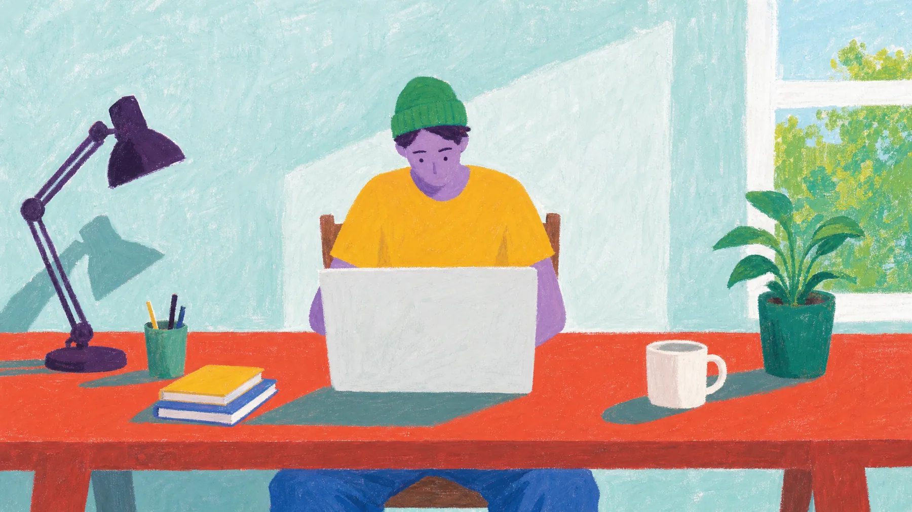
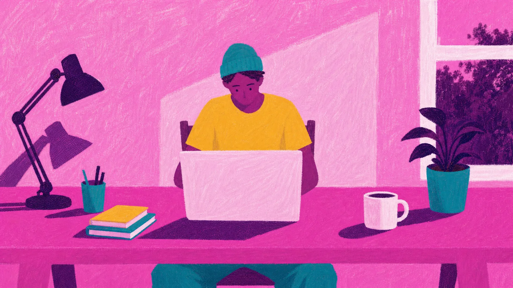
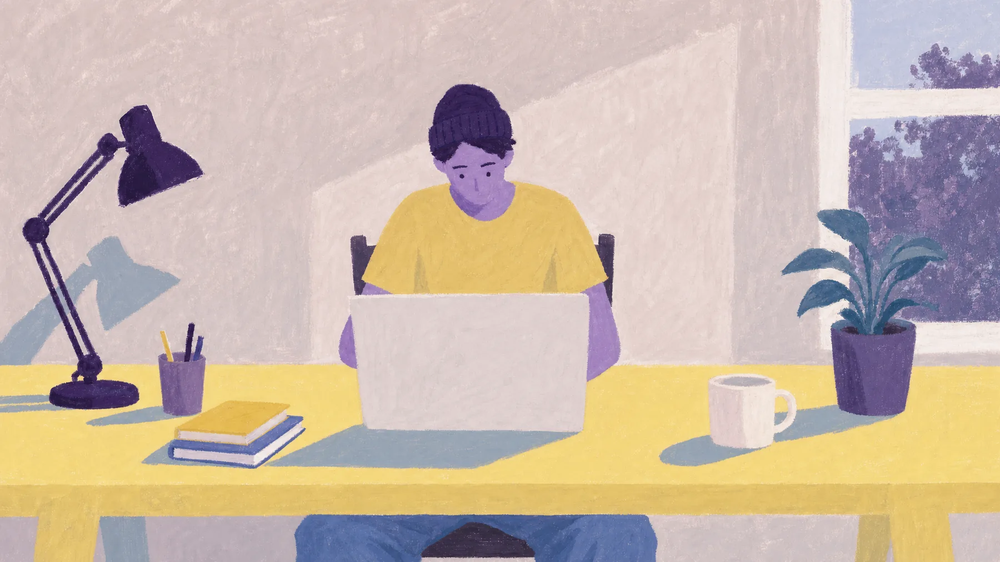

Palette
Browser effects
The three palettes are recolours of one painting, and they line up exactly: 0 px drift, edge correlation 0.93 (P2) and 0.95 (P3). That means Page 2 can crossfade toward pink a little more each time the fly lands, instead of cutting. The two effect buttons preview effects the browser will add over every layer. Grain + dither brings the texture closer to refs 1 and 2 and gives separately generated layers the same surface. Paint boil is the frame-to-frame wobble of the rotoscoped references.